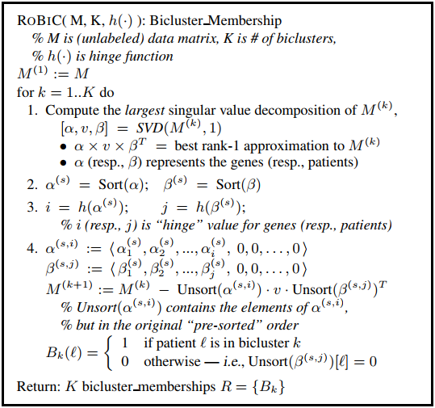

1. BiClustering¶
Given a data matrix with rows and columns, BiClustering (block clustering, co-clustering or two-mode clustering) is able to cluster rows and columns simultaneously. A Bicluster is a subset of rows which exhibit similar behavior across a subset of columns, or vice versa.
1.1. Biclustring via singlular value decomposition¶
